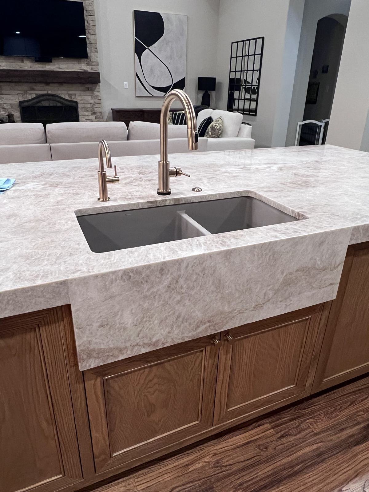

Deep Cleaning in Dallas–Fort Worth
The top-to-bottom reset your home has been waiting for — baseboards, ceiling fans, grout, inside the oven and fridge, and every corner in between. Based in Richardson and cleaning homes all over DFW. See your price instantly and book online.
★★★★★ 5.0-star rated on Google · Background-checked team · Locally owned, serving all of DFW · Open 7 days

When a regular clean isn't enough
Some homes need more than a wipe-down. Maybe it's been a few months. Maybe you just finished a busy season, are getting ready to host, or are tired of looking at the dust line on the baseboards. A deep clean is where we slow down and get to the places a standard clean skips: the grime along the edges, the soap scum in the shower, the tops of things and the insides of the oven and fridge.
It's also the smartest way to start with us. A deep clean brings your home up to a clean baseline, and every recurring visit after that keeps it there — faster, easier and at our reduced recurring rates.
"Lindsey did a fantastic job on our first deep clean – you could truly see the difference everywhere, from the fans and the baseboards to the living room windows I specifically asked for. Everything looks and feels so fresh and cared for!" — K. McGee
Your deep cleaning checklist
Every room, plus baseboard cleaning
- Everything in our standard clean, plus:
- Walls and baseboards spot-cleaned
- Ceiling fan blades and light fixtures dusted
- Blinds dusted
- Light switches and outlet covers wiped
- Window sills wiped
- Upholstered furniture vacuumed
- Floors vacuumed and mopped, including under beds and along the edges
Kitchen and cabinet cleaning
- Cabinet fronts and handles wiped; inside of cabinets wiped too if they're empty
- Countertops cleaned and disinfected
- Backsplash scrubbed
- Sink cleaned and disinfected
Bathroom deep cleaning
- Soap scum removed from showers and tubs
- Shower walls and floor or bathtub scrubbed
- Tile grout scrubbed
- Toilets scrubbed and disinfected: bowl, tank, base and seat
- Sinks and countertops cleaned and disinfected
- Vanity and cabinet fronts wiped
- Mirrors, towel bars and toilet paper holders cleaned
Appliance cleaning
- Inside the oven and inside the refrigerator, both included
- Microwave wiped inside and out
- Outside of the fridge, oven and microwave wiped
- Stovetop and drip pans cleaned
- Range hood exterior wiped
Got pets? A deep clean is the best way to clear built-up pet hair from baseboards, corners and upholstered furniture. See our pet-friendly house cleaning.
Upfront pricing, no guessing
Your deep clean price is based on your home's size and the service you pick, and you'll see it on screen before you book, so there are no surprises when we arrive.
The best value: deep clean first, then go recurring
Most of our happiest clients start with one deep clean and then switch to a weekly, every-other-week or monthly plan. The deep clean does the heavy lifting once; recurring visits keep everything at that level for a lower rate per visit.
We take our time so the details get done
We aren't a rush-through service. Our team would rather spend the extra minutes on the fan blades and the faucet base than leave you finding the spots we missed. We use professional-grade, eco-conscious products (or yours, if you'd like), every team member is background checked, and we try to send the same trusted cleaner each visit.
"Her attention to detail is amazing." — Tom R., recurring client (Yelp review)
How long does a deep clean take?
It depends on the size and condition of your home. Deep cleans take noticeably longer than a standard visit because we're cleaning the places that usually get skipped. You'll pick an arrival window when you book.
How often should I get a deep clean?
Many homes do well with a deep clean once or twice a year, or as a first visit before starting recurring service. If you're on a recurring plan, most of that detail stays handled.
Do I need to be home?
No. Plenty of clients leave a key or entry code. Just let us know in your booking notes.
Can I request specific areas?
Absolutely — add them to your booking notes. Clients ask for things like living room windows or a particular bathroom all the time.
What if I need to reschedule?
Give us at least 48 hours' notice and we'll find a new time. Late cancellations may carry a fee.
Ready for a home that feels brand new?
See your deep cleaning price in about two minutes and choose a day that works for you. We serve homes all over Dallas–Fort Worth.
Call (469) 210-8005 · Open Mon–Sun, 8:30 AM–7:30 PM